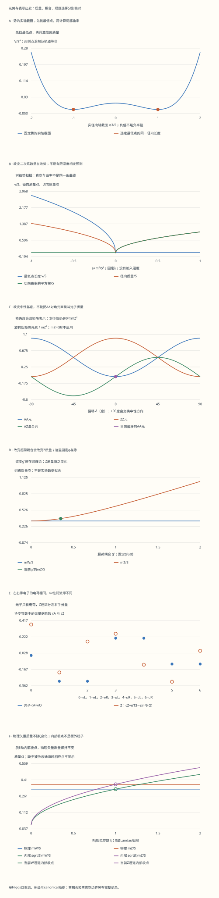

本页目录
粒子 II · 电弱统一与 Higgs 机制
前置：规范场与手征表示、相变与势的曲率、BCS 与电磁响应。
本课要回答一个具体问题：同一个 Higgs 双重态怎样让三个矢量场获得质量，同时留下一个无质量组合？先从势的最小值和生成元算出矩阵，再解释粒子、规范选择和实验各自告诉了我们什么。
1. 先做一个能推翻错误理解的实验
把“光子无质量”背成结论，还不能解释它为什么出现。这里让你改变势的二次项、两个规范耦合和中性混合角：哪些改变了真空或理论，哪些只是换了一套坐标？
实验固定四维时空中的树级单 Higgs 双重态，规范场动能已按标准形式归一化。8 个输入分别是 \(g,g'\)、参考能标 \(S\)、二次系数 \(a=m^2/S^2\)、四次耦合 \(\lambda\)、混合角偏移、一个示意 Yukawa 耦合 \(y\)，以及规范固定参数 \(\xi\)。百分数只是控件的输入单位；例如 65 表示 \(g=0.65\)。\(S\) 是便于设定势的参考量，不自动等于真空期望值 \(v\)。
先完成四项预测，再看六幅图及完整矩阵。推荐按“默认 → 错误混合角 → 正二次项 → 两个耦合关闭”的顺序比较。最后用 \(\xi=0,1,2\) 检查：某些传播子极点的位置可以依赖规范，物理矢量质量却不随之改变。
无脚本对照：六份固定记录含完整四实场Hessian、四个生成元与真空切向量、四维规范质量矩阵、本征向量、中性混合、7个物理手征分量、401个势点，以及二次项/耦合/混合角/规范参数扫描。所有质量以GeV记录，质量平方以GeV²记录。

| 预设 | v/GeV | mW/GeV | mZ/GeV | 径向质量/GeV | 质量矩阵秩 | 物理全局Goldstone数 | 物理自由度 |
|---|---|---|---|---|---|---|---|
| default | 246 | 79.95 | 90.803662 | 125.43588 | 3 | 0 | 12 |
| wrong-angle | 246 | 79.95 | 90.803662 | 125.43588 | 3 | 0 | 12 |
| symmetric | 0 | 0 | 0 | 88.696561 | 0 | 0 | 12 |
| global | 246 | 0 | 0 | 125.43588 | 0 | 3 | 12 |
| no-su2 | 246 | 0 | 43.05 | 125.43588 | 1 | 2 | 12 |
| deep | 5000 | 5000 | 5000.0625 | 707.10678 | 3 | 0 | 12 |
下载六份完整记录。零耦合是理论解耦极限；对称原点处没有被吸收的Goldstone。无定义的物理角度、比值和匹配量在记录中标null，不用人为补零冒充结论。
2. 先问什么质量项受到限制
一个只含规范场的朴素项 \(\tfrac12 M^2 A_\mu A^\mu\)，通常不在原来的局域规范变换下保持不变。问题是它是否与指定理论的表示和变换规则一致，不能由此推出“一切质量项都不合法”。标量项 \(m^2\Phi^\dagger\Phi\) 就是规范不变量；处在相同规范表示中的左右手费米子也可能允许 Dirac 质量。最小标准模型的带电费米子恰好是手征表示，直接拼接其左右手场无法形成所需的不变量。
引入 Higgs 场的做法是保留规范不变的完整 Lagrangian，然后围绕合适背景展开。另一些理论可以采用 Stückelberg 场或有效场论描述；可重整性、幺正性和有效截止要结合完整场内容分析，不能用一句“手写质量毁掉一切”替代论证。
本页沿用上一课的符号：
有些讲义选择负号的协变导数；只要场变换和相互作用符号同步改变，质量平方的推导不受这个约定影响。完整模型还包含规范动能、费米子动能与规范不变的 Yukawa 项。我们先把其中足以确定树级质量的部分单独算清。
3. 势的最低点与四个实方向的曲率
取
把复双重态写成四个实场：
求径向驻点只需解 \(\rho(m^2+\lambda\rho^2)=0\)。若 \(m^2<0\)，原点的曲率为负，稳定极小值满足
这里选择下分量实数作为计算方向。图中的负径向坐标只是穿过原点的一条实轴截面，不是负的径向长度；在至少一个规范耦合非零时，两侧最低点可由作用于双重态的规范变换相连。若两个规范耦合都关闭，则应按全局对称破缺讨论真空，不能继续把它们说成规范冗余。
判断激发的质量，要看最低点处的二阶导数，而不是只看势像不像帽子：
在 \(\varphi_0=(0,0,v,0)\) 处，径向方向的质量平方是 \(m_h^2=2\lambda v^2=-2m^2\)，另三个切向方向的势曲率为零。若 \(m^2>0\)，最低点在原点，四个实方向均有质量平方 \(m^2\)。若 \(m^2=0\)，二阶曲率均为零，但正四次项仍把原点稳定住；这不等于势完全平坦。
实验保留完整 Hessian、梯度和未四舍五入的数值。微小浮点残差要与能标和运算误差一起检查。扫描 \(a\) 得到的是这棵树级势的最低点，不是包含热涨落、圈修正和宇宙演化的电弱相变预测。
4. Goldstone 模与规范冗余不是同一件事
对于相对论性理论的连续内部全局对称，在满足 Goldstone 定理的假设并处理好无限体积极限时，破缺方向会对应无质量激发。这里先关闭规范耦合，四个实标量的径向势就给出一个有曲率的方向和三个切向零方向。
把相应对称性规范化之后，同一规范轨道上的场表示是冗余的描述。“局域对称性自发破缺”是常用简写，不能理解为自然界把这种冗余本身破坏了。计算中选择 \(\Phi_0\) 及规范，最终判断的是规范不变的物理内容。Tong 关于 Higgs 机制的讲义 §2.3 特别区分了这种语言与全局对称破缺。
用一个复标量看清重新分配。对 \(D_\mu=\partial_\mu+iqA_\mu\)，在 \(v>0\) 附近写
二次展开出现 \(\tfrac12(qv)^2A_\mu A^\mu\)，所以矢量质量的大小为 \(|q|v\)。角向场和矢量场在动力学中相连；选择幺正规范后，角向变量不再作为独立的外部物理粒子出现，矢量场则有了纵向极化。这个推导同时说明：\(gv/2\) 中的 \(1/2\) 来自具体生成元归一化，不是所有 Higgs 模型的通用因子。
5. 从生成元构造完整质量矩阵
现在不直接背 \(W/Z\) 的公式。把四个实规范场按 \((W^1,W^2,W^3,B)\) 排列，令耦合依次为 \((g,g,g,g')\)，生成元依次为 \((T^1,T^2,T^3,Y)\)。 在常数背景上，导数项消失，而
这是由生成元作用后的向量组成的实 Gram 矩阵。对任意实系数 \(u_a\)， \(u^TM^2u=2|\sum_a u_ag_aT_a\Phi_0|^2\ge0\)，因此在稳定背景下不会凭空出现负的矢量质量平方。哪个组合不改变真空，哪个组合就处于零方向。
逐项代入得到
实验同时给出四个生成元、四个向量 \(g_aT_a\Phi_0\)、完整矩阵和本征向量。这样不仅能核对数值，还能追查任何少掉的 \(2\)、符号或表示因子。Osborn 的标准模型讲义 也从生成元在真空上的作用讨论矢量质量矩阵。
前两项质量相等，适合合成为带电场 \(W^\pm=(W^1\mp iW^2)/\sqrt2\)，其质量为 \(m_W=gv/2\)。以实场计数时是两个矢量；以复场写法计数时是一个带电矢量及其反粒子，不能重复加一倍。
6. 中性混合：错误角度改变矩阵表示，不改变谱
当 \(r=\sqrt{g^2+g'^2}>0\) 时，定义 \(\sin\theta_W=g'/r\)、\(\cos\theta_W=g/r\)，则中性组合为
直接计算 \(RM_0^2R^T\) 得到 \(\operatorname{diag}(0,v^2r^2/4)\)，即
光子的零质量也可从 \(Q=T^3+Y\) 看出来： \(Q\Phi_0=0\)。这里的表示选择、规范耦合与混合的推导可对照 Tong 电弱讲义 §5.2。
现在故意令 \(\theta=\theta_W+\delta\)。旋转矩阵的列分别是新定义的两个方向，结果成为
新“\(AA\)”对角元可以非零，仍然不能把它叫作光子质量平方，因为这两个变量还通过非对角元混合。再次求本征值仍得 \(0,m_Z^2\)。偏移 \(90^\circ\) 时非对角元再次为零，但两个方向的身份已经交换；“非对角元为零”本身不足以判定哪个变量叫光子。
默认模型输入给出 \(v=246\ \mathrm{GeV}\)、\(g=0.65\)、\(g'=0.35\)，于是 \(m_W=79.95\ \mathrm{GeV}\)、\(m_Z\approx90.80\ \mathrm{GeV}\)。这些是示意参数的树级结果，不是本页测得的粒子质量。
7. 零耦合与零真空：自由度必须重新核账
质量公式在边界上仍能计算，但某些比值或粒子命名会失去唯一性。\(v=0\) 时整个规范质量矩阵为零，中性质量项不选择一个特殊角度。\(g=g'=0\) 时连 \(\theta_W=\arctan(g'/g)\) 都没有定义。实验把物理混合角标为“不适用”，只为矩阵展示选择参考角 \(0\)，不会把这个约定当成测量结果。
完整四维矩阵的秩 \(k\) 告诉我们有多少个实矢量变成有质量矢量。对这组场，质量生成前后的总物理自由度满足
| 树级背景与耦合 | 质量矩阵秩 \(k\) | 有质量矢量 | 保留的物理标量 |
|---|---|---|---|
| \(v>0,\ g>0,\ g'>0\) | 3 | 3 | 1 |
| \(v>0,\ g>0,\ g'=0\) | 3 | 3 | 1 |
| \(v>0,\ g=0,\ g'>0\) | 1 | 1 | 3 |
| \(v>0,\ g=g'=0\) | 0 | 0 | 4 |
| \(v=0\) | 0 | 0 | 4 |
在第三行，两个切向方向未被吸收；第四行保留三个全局 Goldstone。最后一行没有选出非零真空方向，不能把原点处的标量一律称作 Goldstone。特别是 \(m^2>0\) 时，它们有正质量。
当 \(g=0\) 而 \(g'>0\) 时，中性子块仍可选出一个零方向，但另外两个 SU(2) 矢量也已解耦且无质量。这是用于检查公式的理论边界，不是我们现实中的电磁相互作用。
8. 电荷与手征流：光子和 Z 的耦合不同
质量矩阵确定了中性方向，接下来把同一旋转代入费米子协变导数。对于给定手征分量 \(f\)，定义 \(Q=T_3+Y\)，则协变导数中的两个系数为
在本页 \(D=\partial+i(\cdots)\) 的约定下，费米子 Lagrangian 相互作用含 \(-c_AA_\mu\bar f\gamma^\mu f-c_ZZ_\mu\bar f\gamma^\mu f\)，相应手征投影需要保留。实验表给出的是系数 \(c_A,c_Z\)，不是省略所有约定的费曼规则。
这一页使用物理的左手、右手场标签，与上一页为算异常而统一改写为左手共轭场的表不同：
| 分量 | \(T_3\) | \(Y\) | \(Q\) |
|---|---|---|---|
| \(\nu_L\) | \(1/2\) | \(-1/2\) | 0 |
| \(e_L\) | \(-1/2\) | \(-1/2\) | \(-1\) |
| \(e_R\) | 0 | \(-1\) | \(-1\) |
| \(u_L\) | \(1/2\) | \(1/6\) | \(2/3\) |
| \(u_R\) | 0 | \(2/3\) | \(2/3\) |
| \(d_L\) | \(-1/2\) | \(1/6\) | \(-1/3\) |
| \(d_R\) | 0 | \(-1/3\) | \(-1/3\) |
左右手电子的电荷相同，故光子耦合相同；它们的 \(T_3\) 不同，故 Z 耦合不同。右手电子不是“完全不参与弱相互作用”：在最小标准模型中它没有左手型带电弱流，却有中性弱流。带电流的系数是 \(g/\sqrt2\)，其 SU(2) 升降算符连接同一个左手双重态的两个分量。味混合留到 味与中微子。
9. Yukawa 与低能匹配：关系式不解释参数大小
完整标准模型对上型夸克、下型夸克和带电轻子分别使用能组成规范单态的 Higgs 组合。以四分量写法， \(\widetilde\Phi=i\sigma^2\Phi^*\)，上型项用 \(\bar Q_L\widetilde\Phi u_R\)，下型与带电轻子用 \(\bar Q_L\Phi d_R\)、\(\bar L_L\Phi e_R\)，各自再加 Hermitian 共轭。
在 \(v>0\) 的选定规范中，示意的单个 Yukawa 项给出
因此只要这个质量来自同一个 Yukawa 项，就有树级耦合关系 \(g_{hff}=m_f/v\)。它没有计算出 \(y\) 应有多大。实验中的 \(y\) 是一个可调示意输入，没有把它自动指定为顶夸克或任何真实粒子。\(v=0\) 时仍有完整双重态的 Yukawa 相互作用，但没有这里围绕非零真空定义的单个径向 \(h\)，所以界面不显示一个假定存在的 \(hff\) 物理耦合。
同理，质量矩阵围绕 \(v+h\) 展开为 \(M^2(v+h)=M^2(v)(1+h/v)^2\)。从这个 Lagrangian 系数再提取顶点时，要保留相同粒子的组合因子。
在动量远小于 \(m_W\) 的范围，把 W 传播子展开可以匹配四费米理论。树级关系是
这个等式要求能够积分掉有质量的 W；不能在 \(g=0,m_W=0\) 时先约掉 \(g^2\) 再宣称仍可做同一个低能匹配。精密分析还要指定圈修正与参数方案。质子质量主要涉及 QCD 的强相互作用动力学，也不等于把质子套进某个基本 Yukawa 参数。
10. Rξ 规范：随 ξ 移动的极点不等于新粒子
“被吸收”不意味着在每一种计算方式里都彻底删去角向场。为看见这一点，对前述 Abelian 二次部分取 \(m=qv>0\)：
加入规范固定项
交叉项 \(mA_\mu\partial^\mu\pi\) 分部积分后，正好与规范固定产生的交叉项抵消，角向场得到 \(-\tfrac12\xi m^2\pi^2\)。同一规范条件的线性变分给出 ghost 算子中的质量平方 \(\xi m^2\)。这些是计算内部的规范相关极点，不增加一组外部可观测粒子。
电弱理论在质量本征通道中同样给出 \(m_{G^\pm}^2=\xi m_W^2\)、\(m_{G^0}^2=\xi m_Z^2\)，对应 ghost 的树级质量平方也如此。实验同时画 \(\sqrt{\xi}\,m_W,\sqrt{\xi}\,m_Z\) 与固定的物理矢量质量，目的就是把二者分开。没有被吸收的通道，其“would-be Goldstone 规范质量”标为不适用；真正保留的全局 Goldstone 另计。
\(\xi=0\) 是 Landau 规范的极限，此时不能机械地把 \(1/\xi\) 直接当成普通数代入 Lagrangian；图画的是相关极点公式的极限。\(\xi=1\) 是常用的 Feynman 型选择。实验有限扫描到 \(\xi=2\)，没有把它冒充为幺正规范的无限参数极限。物理可观测量的规范独立性需要完整、一致的计算；截断或混用不同阶的参数可能留下人为的规范依赖。
11. 从质量生成走向实验与研究
2012 年 ATLAS 和 CMS 宣布发现与 Higgs 预期相容的新玻色子，是检验这套机制的关键证据。后续对自旋、产生与衰变的研究继续检验它的性质。CERN 的发现说明 介绍了如何从背景上识别信号；它不是在宣告所有 Higgs 性质已被确定。
本页的树级关系也不能直接当成“精密实验所有数据精确落在一条线”。精密电弱检验涉及重整化方案、理论误差、实验误差以及不同观测量的联合约束。进一步研究 Higgs 自耦合、额外标量和电弱有效场论，需要在这套基础上继续搭建。
本实验没有包含非微扰有限温度动力学，故不能从帽形势直接判断现实电弱转变的阶数或是否能产生宇宙的重子不对称。最小标准模型的中微子质量问题、暗物质及 Yukawa 等级，也没有被这张质量矩阵解决。用规范不变的算符与相关函数刻画 Higgs 区域，则是比“真空向量朝哪边”更深入的研究问题。
读到这里，可以把 QCD 与强子 作为下一站：比较“基本场的树级质量参数”与“强相互作用产生的复合粒子质量”。若要讨论探测与统计证据，再转到 对撞机与探测器。
12. 八道把公式变成判断力的练习
1 · 二次项为负，是不是说明真实 Higgs 的质量是虚数？
负的是原点附近的曲率 \(m^2\)，它说明原点不稳定。先求新的最低点 \(v^2=-m^2/\lambda\)，再算 Hessian，径向激发满足 \(m_h^2=-2m^2>0\)。把错误展开点处的不稳定性叫成稳定真空中粒子的质量，会把两种不同问题混在一起。
2 · 不背公式，如何证明光子零方向？
令 \(n=(0,0,\sin\theta_W,\cos\theta_W)\)，则 \(\sum_a n_ag_aT_a\Phi_0=e(T^3+Y)\Phi_0=0\)。 Gram 形式立即给出 \(M^2n=0\)。需要 \(r>0\) 才能使用这个角度；\(v=0\) 时全部方向都在零空间，不能据此选唯一光子方向。
3 · 偏移混合角后 AA 元素非零，是否发现光子质量？
没有。偏移后矩阵为 \(m_Z^2\begin{pmatrix}\sin^2\delta&\sin\delta\cos\delta\\\sin\delta\cos\delta&\cos^2\delta\end{pmatrix}\)，迹仍是 \(m_Z^2\)，行列式仍为零。因此本征值未变。取 \(\delta=90^\circ\) 更能看清陷阱：矩阵又对角了，但原来的重方向被标成第一个变量，名字不决定质量本征态。
4 · g=0、g′不为零且v不为零时，三个Goldstone都被吸收吗？
不。只有超荷场的一个实方向获得质量，完整矩阵秩为1。原有三个切向零方向中只吸收一个，剩余两个为物理全局Goldstone，再加一个径向标量。自由度是 \(1\times3+3\times2+3=12\)。这个解耦边界不能用“总共四个生成元，所以永远吃三个”替代计算。
5 · 左右手电子电荷相同，为什么Z耦合不同？
两者都有 \(Q=-1\)，故 \(c_A=-e\)。但左手电子 \(T_3=-1/2\)，右手电子 \(T_3=0\)，所以 \(c_Z(e_L)=r(-1/2+\sin^2\theta_W)\)、 \(c_Z(e_R)=r\sin^2\theta_W\)。 它们的差为 \(-r/2\)。上一页的 \(e^c\) 是左手共轭场，超荷为 \(+1\)；这里的 \(e_R\) 超荷为 \(-1\)，不要把两个表的标签交叉使用。
6 · 把λ加倍而保持m²不变，v、mh和mW怎样变化？
在 \(m^2<0\) 区域，\(v^2=-m^2/\lambda\)，所以 \(v\) 除以 \(\sqrt2\)。固定 \(g\) 时 \(m_W\) 也除以 \(\sqrt2\)，而 \(m_h^2=-2m^2\) 不变。如果选择保持 \(v\) 不变而改变 \(\lambda\)，就必须同时改变 \(m^2\)，这时 \(m_h\) 才会变化。说“改变一个耦合后质量如何变”之前，先说明固定了哪些参数。
7 · ξ=0时角向传播子无质量，是否多出可观测Goldstone？
对已经被吸收的通道，\(m_G^2=\xi m_V^2\) 是规范相关内部极点，\(\xi=0\) 的零值不会改变物理自由度。应核对物理矢量极点及完整可观测量，而不是把单个规范相关传播子中的极点直接登记为外部粒子。若规范耦合本来就为零，未被吸收的全局Goldstone是另一个情形，本实验单独计数。
8 · 已知v，能否计算全部粒子质量并解释它们的差异？
还不能。矢量质量还需 \(g,g'\)，径向质量还需 \(\lambda\)，每种基本费米子的质量还需相应 Yukawa 参数或矩阵。关系式 \(m_f=y_fv/\sqrt2\) 约束质量与耦合如何联系，却没有解释 \(y_f\) 的等级。复合强子、中微子扩展和引力尺度又涉及不同问题；同一个“Higgs给质量”的短句不能把这些区别抹掉。